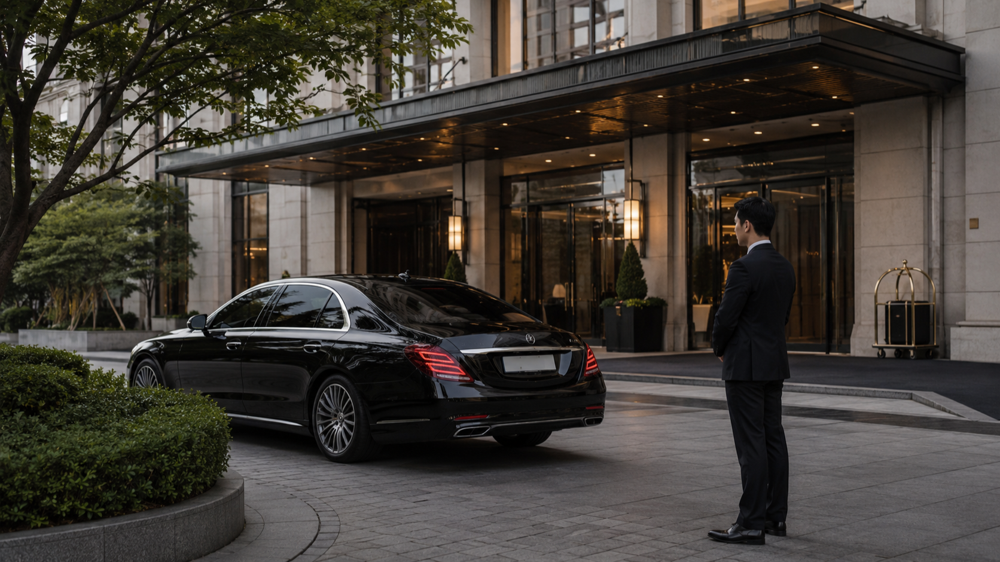
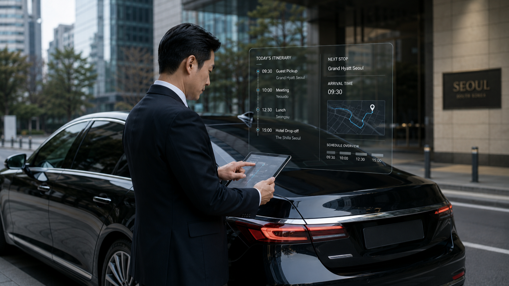

Wizmobility가 실제로 하는 일
한국의 지상 이동 시장에서 수송 서비스 제공자가 속한 분류는 거의 모든 것을 결정합니다. 규제 체계, 차량 기준, 기사 교육 방식, 배차 구조, 그리고 운영 설계의 가능 범위까지. Wizmobility는 한국에서 지상 교통을 설명할 때 흔히 쓰이는 세 가지 분류 어디에도 속하지 않습니다. 왜 그런지 이해하려면, 각 서비스 공급자가 실제로 무엇을 제공하는지, 그리고 어디서 멈추는지를 먼저 살펴야 합니다.
고전적인 분류가 충분하지 않은 이유
한국 지상 이동 시장을 지배하는 세 가지 카테고리 — 택시, 렌터카, 콜밴 — 는 각자 특정한 수요에서 출발했습니다. 택시는 개인의 도심 이동을 해결합니다. 렌터카는 직접 운전하는 이용자에게 차량을 제공합니다. 콜밴은 그 사이 빈자리를 채웁니다. 기사가 있고, 차량이 조금 더 크고, 전화나 앱으로 예약합니다.
각 서비스는 본래 목적 안에서 충분히 잘 작동합니다. 문제는 이 서비스들이 설계되지 않은 상황에서 발생합니다. 글로벌 브랜드, MICE 기획자, 인바운드 행사 담당팀이 한국에서 운영할 때 요구하는 것들 — 50회에서 500회에 이르는 일관된 차량 편성, 브랜드 프로토콜에 맞춘 기사 사전 브리핑, 행사 일정에 맞게 사전 답사된 경로, 여러 호텔 출발지를 아우르는 실시간 조율, 그리고 모든 변수를 탑승객에게 닿기 전에 흡수하는 운영 단계 — 은 어느 서비스의 설계 범위에도 들어가 있지 않습니다.
이것은 품질의 실패가 아닙니다. 카테고리 불일치입니다. 콜밴 서비스에 럭셔리 브랜드 의전을 맡기는 것은, 멀쩡한 도구를 엉뚱한 데 쓰는 셈입니다.

서비스 공급자를 실질적으로 구분하는 기준
지상 이동에서 의미 있는 구분은 차량 종류나 가격대가 아닙니다. 해당 제공자가 운영 설계 수준에서 일하는가, 아니면 운송 이행 수준에서 일하는가에 있습니다.
운송 이행은 이 질문에 답합니다. "A에서 B로 차량을 보낼 수 있습니까?" 한국의 모든 택시, 렌터카, 콜밴 서비스는 이 질문에 "예"라고 답할 수 있습니다. 새로운 카테고리를 정의하는 질문은 이것입니다. "명확한 차량 기준, 기사 브리핑 절차, 경로 설계, 배차 조율 체계, 문서로 정리된 고객 요구사항을 갖추고, 탑승객이 운영의 이음새를 느껴서는 안 되는 장기간에 걸친 운영 전체를 설계하고 실행할 수 있습니까?"
이 질문은 해당하는 제공자의 범위를 상당히 좁혀 줍니다. 그리고 이 질문에 답할 수 있는 제공자들이 그렇지 않은 제공자들과 같은 기준으로 경쟁하지 않는 이유를 설명합니다.
앞서 발행된 한국 의전 운송 운영 설계 인사이트에서 살펴본 것처럼, 조달 사고에서 설계 사고로의 전환이 탑승객이 전혀 인식하지 못하는 파트너와 기억에 남는 파트너를 가르는 지점입니다.
Wizmobility를 구분짓는 세 가지 차이
Wizmobility와 일반 수송 서비스 공급자간의 차이는 표현 방식이 아니라 구조적 차이입니다. 세 가지를 명확히 짚겠습니다.
차량 가용성이 아니라 차량 편성 설계. 택시와 콜밴 서비스는 실시간으로 수요에 공급을 맞춥니다. Wizmobility는 특정 운영 요구사항에 따라 차량 등급, 대수, 지역별 배치를 사전에 설계합니다. 첫날 도착하는 차량은 그날 아침 가용한 차량이 아니라 몇 주 전에 명시된 차량입니다.
기사 배정이 아니라 기사 사전 브리핑. 렌터카는 기사를 아예 제외합니다. 택시는 기사를 운행에 배정합니다. Wizmobility는 기사에게 브리핑을 진행합니다 — 클라이언트 브랜드, 탑승객 프로필, 언어 요건, 경로, 시간 계획, 실내 환경, 그리고 해당 운영이 요구하는 구체적인 행동 지침까지. 기사는 운영의 준비된 참여자이지, 이행 변수가 아닙니다.
예약 관리가 아니라 운영 조율. 한국의 대부분 지상 교통은 개별 예약의 집합으로 관리됩니다. Wizmobility는 하나의 운영을 관리합니다. 중앙 배차, 전 차량 실시간 현황 파악, 호텔 출발 조율, 그리고 운영 기간 전체에 걸쳐 전체 상황을 파악하는 단일 운영 책임자. 이 차이는 무언가 바뀔 때 비로소 드러납니다. 그리고 현장에서는 늘 무언가가 바뀝니다.

기존 수송 서비스 공급자의 영역
이것이 택시, 렌터카, 콜밴의 역량이 부족하다는 의미는 아닙니다. 각 서비스는 설계된 목적 안에서 충분합니다. 사전 답사 일정으로 인천국제공항에 도착하는 클라이언트에게는 운영 파트너가 필요하지 않습니다. 잘 예약된 택시나 의전 차량 이동으로 충분합니다.
새로운 서비스에 대한 질문은 운영이 규모를 갖출 때 중요해집니다. 여러 명의 탑승객, 여러 출발지, 명확한 브랜드 맥락, 장소와 장소 사이에서 일어나는 것까지 호스피탈리티 기준이 적용되는 클라이언트. 그 시점에서 서비스 제공자가 속한 카테고리는 이후의 모든 것을 결정하며, 가장 먼저 올바르게 잡아야 할 것이 바로 그것입니다.
Wizmobility는 택시, 렌터카, 콜밴보다 낫다고 주장하지 않습니다. 전혀 다른 질문에 답합니다. 이 구분을 이해하는 운영자일수록 기획 초기에 더 나은 결정을 내리는 경향이 있으며, 나중에 수정하는 데 드는 시간도 줄어듭니다.
지금 이 구분이 중요한 이유
글로벌 호스피탈리티 일정에서 한국의 위상이 달라졌습니다. 글로벌 패션 브랜드, 자동차 브랜드, 국제 MICE 기관이 이제 서울, 부산, 경주에서 파리, 도쿄, 밀라노와 동일한 운영 기대치를 가지고 일합니다. 인프라에 대한 기대 수준도 그에 맞게 높아졌습니다.
그 기대에 부응할 수 있는 지상 이동 제공자는 소수입니다. 이들은 보유 차량 수나 요금표로 정의되지 않습니다. 운영 설계가 자신이 하는 일의 핵심인지, 아니면 운송 사업에 부수적으로 붙은 것인지로 정의됩니다.
한국에서 지상 이동 파트너를 선정하는 인바운드 운영자, 글로벌 컨시어지 팀, MICE 기획자에게 첫 번째 질문은 어떤 택시 회사나 밴 서비스를 이용할지가 아닙니다. 검토 중인 서비스 공급자가 자신이 기획하는 운영과 같은 서비스 영역에서 일하는가입니다. 그 질문의 답이 이후의 모든 것을 결정합니다.